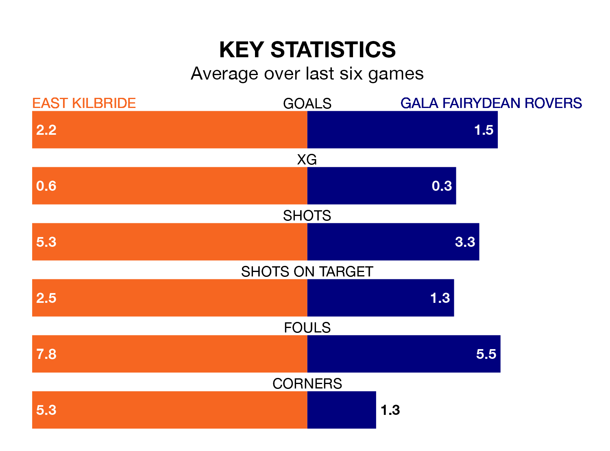

Gala Fairydean Rovers travel to K Park Training Academy for Saturday's match against East Kilbride looking to bounce back from defeat last time out in Highland and Lowland Football Leagues.
Gala Fairydean, who sit zero in the league after 17 games, fell to a 2-1 away defeat to Tranent Juniors on November 11.
They face an East Kilbride side who also lost their last match, a 4-2 defeat to Hearts U21, and who sit first in the table.
With 50 goals in 16 games so far this season, East Kilbride are the league's highest scorers with 3.1 goals per game. And they are conceding fewer than average, letting in 18 goals at a rate of 1.1 per game.
Gala Fairydean, meanwhile, are below average scorers, with 1.5 goals per game, compared to a league average of 1.7. They have conceded 2.1 goals per game.
The Kilby are in fantastic form in Highland and Lowland Football Leagues, with five wins and one loss from their last six games.
With a win and a draw over that period, Rovers' form is much worse – they have taken four points from 18, compared to the hosts' 15.
In the last five years, East Kilbride and Gala Fairydean have played each other on seven occasions. East Kilbride won six of them and they drew once.
On average, the Kilby scored 4.0 goals and Gala Fairydean 1.4 in those matches.
Their last meeting was on August 12, when East Kilbride won 6-1 away.
